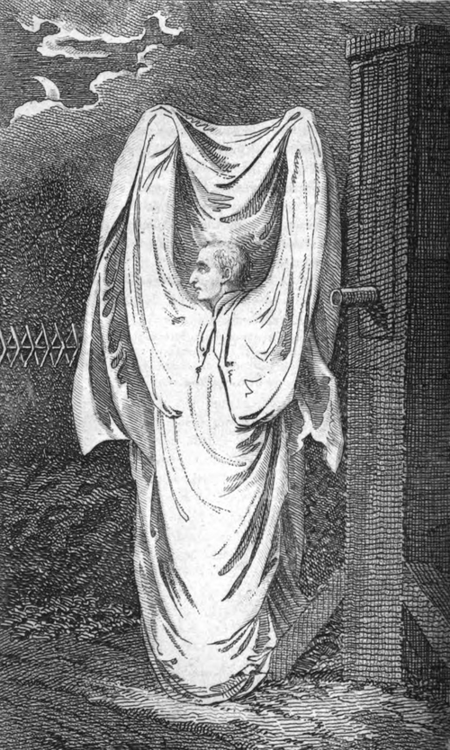

Home page

An engraving of the Hammersmith Ghost appears in Roger Kirby's Wonderful and Scientific Museum, a magazine published in 1804. The "ghost" turned out to be an old local cobbler who used a white sheet to get back at his apprentice for scaring his children.[1]
The Ghost
In folklore, the ghost is the soul or spirit of a dead person or non-human animal that is believed by some people to be able to appear to the living. In ghostlore, descriptions of ghosts vary widely, from an invisible presence to translucent or barely visible wispy shapes to realistic, lifelike forms. The deliberate attempt to contact the spirit of a deceased person is known as necromancy, or in spiritism as a séance. Other terms associated with it are apparition, haunt, haint, phantom, poltergeist, shade, specter, spirit, spook, wraith, demon, and ghoul.